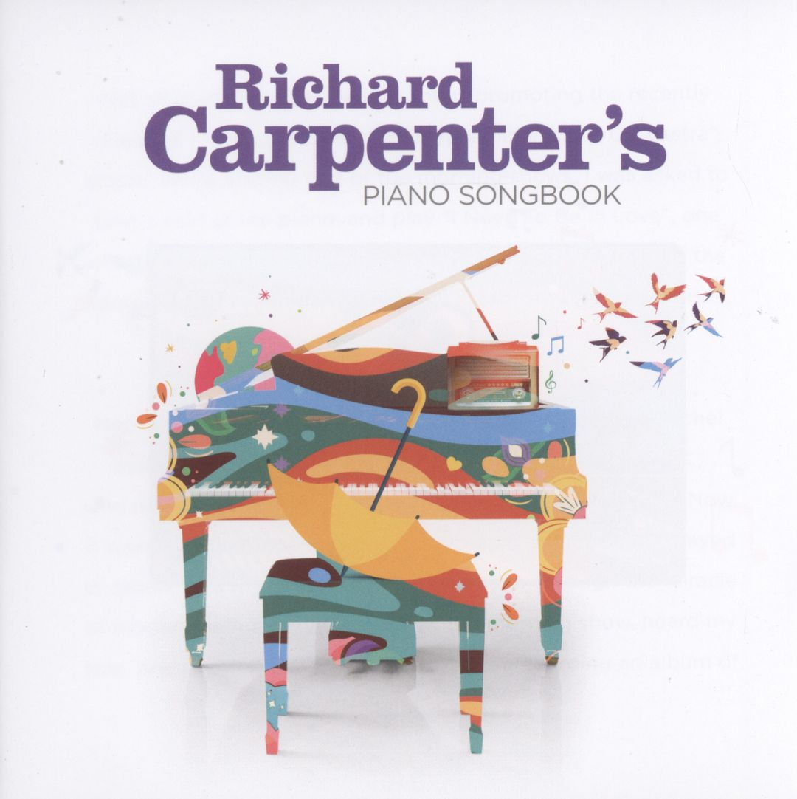

4
0
0
0
木匠兄妹名曲 (鋼琴演奏輯)
- mti： Richard Carpenter's piano songbook.
- au： Carpenter, Richard, 1946- composer, performer.
- oau：
- Raposo, Joe. Sing
- Carpenter, Richard, 1946- Goodbye to love
- Bettis, John, 1946- Goodbye to love
- Carpenter, Richard, 1946- Eve
- Bettis, John, 1946- Eve
- Nichols, Roger, 1940- Rainy days and mondays
- Williams, Paul, 1940- Rainy days and mondays
- Nichols, Roger, 1940- I won't last a day without you
- Williams, Paul, 1940- I won't last a day without you
- Karlin, Fred, 1936-2004. For all we know
- Wilson, Robb, 1942- For all we know
- Griffin, Jimmy, 1943-2005. For all we know
- Bacharach, Burt, 1928- Close to you
- Carpenter, Richard, 1946- Yesterday once more
- Bettis, John, 1946- Yesterday once more
- Carpenter, Richard, 1946- I need to be in love
- Bettis, John, 1946- I need to be in love
- Hammond, Albert, 1944- I need to be in love
- Williams, Paul, 1940- Rainbow connection
- Ascher, Kenny, 1944- Rainbow connection
- Carpenter, Richard, 1946- Top of the world
- Bettis, John, 1946- Top of the world
- Nichols, Roger, 1940- We've only just begun
- Williams, Paul, 1940- We've only just begun
- oti：
- Piano songbook
- I won't last a day without you
- For all we know
- Close to you
- Yesterday once more
- I need to be in love
- Rainbow connection
- Top of the world
- We've only just begun
- 木匠兄妹名曲 (鋼琴演奏輯)
- Publish： Hilversum, Netherlands : Decca ©2021.
- Subject： Popular music--United States. , Popular instrumental music. , Piano music. , Love songs.
- URL：
https://serv.npac-ntch.org/CD/31B/C031779.htm
- Artists note：Richard Carpenter, piano.
-
usertag：
- ref_id： 005148639 | MARC
Holdings Info

摘自 佳佳唱片 網站 : 流行音樂史上最重要的圖騰之一「木匠兄妹」，理查．卡本特挑選九首當年燴炙人口的經典歌曲，改編為鋼琴獨奏版本，重新詮釋令人動心的甜美旋律，讓老樂迷與新樂迷同時享受「木匠兄妹」雋永的魅力！
「木匠兄妹」是1970年代最受歡迎的演唱組合之一，哥哥理查負責鋼琴演奏，凱倫負責打鼓與演唱。「木匠兄妹」出道不久即在1971年的葛萊美獎獲得年度最佳新人、最佳流行表演團體等殊榮，他們發行的單曲多次攻佔美國告示牌百大排行榜第一名，而這些單曲集結而成的專輯，光是在美國即有超過700萬張的驚人銷售記錄，他們甚至在1972年受邀至白宮拜訪尼克森總統。凱倫獨特的溫柔嗓音一直是許多樂迷鍾愛的極品，但她長期受到嚴重神經性厭食症之苦，1983年撒手人寰，那年她才32歲，而木匠兄妹樂團也隨之告終。
74歲的理查灌錄這張專輯時，仍然不時想起他與妹妹凱倫創作一首又一首經典的美好時光，他回憶道 :「她離開時才32歲，太早了，她本來可以為我們帶來更多的歌曲。」
Contents
Medley : Sing, Goodbye to love, Eve, Rainy days and mondays -- I won't last a day without you -- For all we know -- Close to you -- Yesterday once more -- I need to be in love -- The Rainbow connection -- Top of the world -- We've only just begun.